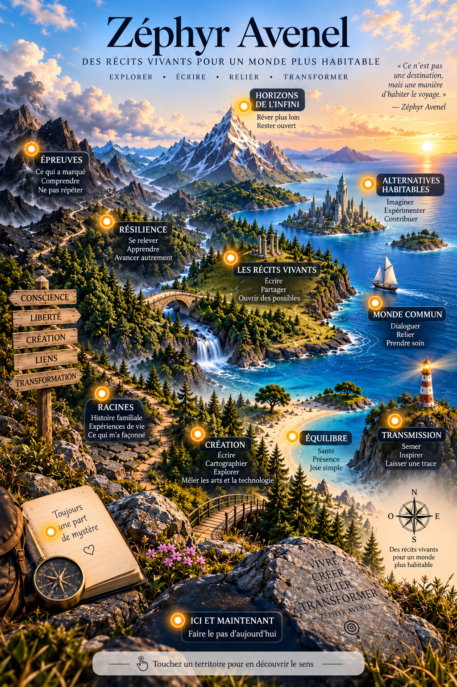

Territoire
Cartographie sensible
Une carte pour s’orienter
Cette carte n’est pas un parcours à suivre. Elle rassemble quelques territoires depuis lesquels j’écris, j’explore et je crée. Touchez un point lumineux pour en découvrir le sens.
